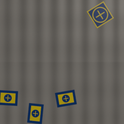
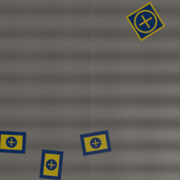

Blender-derived tangent basis and a controlled nadir image pair support the intended UV rotation on a flat plane. The full GPU material and span study remains unrun.


Clockwise image rotation: mean absolute grayscale difference 0.51/255 and correlation 0.981 over 41,904 unmasked ground pixels. See methods, provenance and limitations.
The initial light rotation had the wrong sign and is retained as an inconclusive diagnostic.